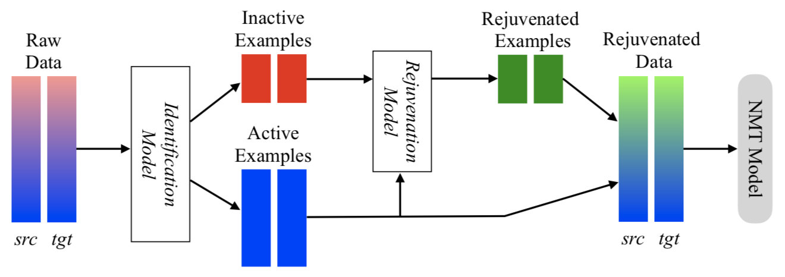
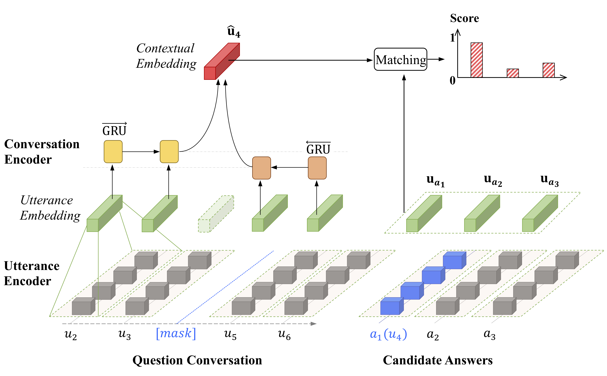

Biography
I'm a PhD student from the Dept of Computer Science and Engineering in the Chinese University of Hong Kong.
My research interests include emotion recognition in conversations, multimodal learning, and neural machine translation.
Education
Education
- 2017 - Now: PhD student at the Chinese University of Hong Kong, major in Computer Science and Engineering.
- 2015 - 2017: Mphil degreee at Nanjing University, major in Optical Engineering.
- 2011 - 2015: Bachelor degree at Nanjing University, major in Information Engineering.
Publications

Data Rejuvenation: Exploiting Inactive Training Examples for Neural Machine Translation
Wenxiang Jiao, Xing Wang, Shilin He, Irwin King, Michael Lyu, Zhaopeng Tu
To appear in EMNLP 2020
[Paper]
Wenxiang Jiao, Xing Wang, Shilin He, Irwin King, Michael Lyu, Zhaopeng Tu
To appear in EMNLP 2020
[Paper]

Exploiting Unsupervised Data for Emotion Recognition in Conversations
Wenxiang Jiao, Michael Lyu, Irwin King
To appear in the Findings of EMNLP 2020
[Paper]
Wenxiang Jiao, Michael Lyu, Irwin King
To appear in the Findings of EMNLP 2020
[Paper]

Academic Activity
Reviewer
Forums
Paper Reading
- 2019-2020: ACL2020, EMNLP2020, AAAI2021
- 2018-2019: ACL2019, EMNLP2019, NeurIPS2019, ICML2019
Forums
Paper Reading